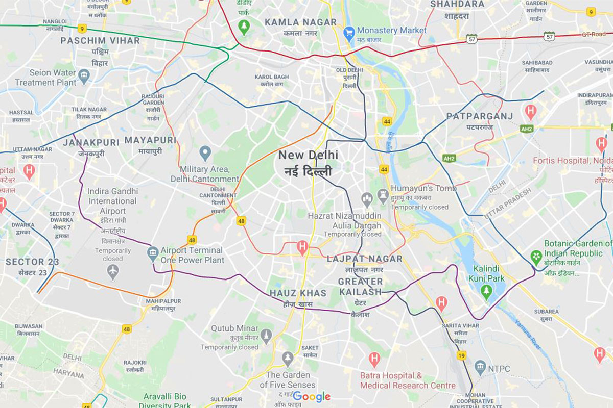

<ion-header [translucent]="true">
  <ion-toolbar>
    <ion-buttons slot="start">
      <ion-menu-button></ion-menu-button>
    </ion-buttons>
    <ion-title>Track your trip</ion-title>
  </ion-toolbar>
</ion-header>

<ion-content [fullscreen]="true">
  <ion-header collapse="condense">
    <ion-toolbar>
      <ion-title size="large">Track your trip</ion-title>
    </ion-toolbar>
  </ion-header>

  <mat-horizontal-stepper (selectionChange)="stepChanged($event)">
    <mat-step *ngFor="let day of tripPlan; let i = index" [stepControl]="dayForm">
      <form [formGroup]="dayForm">
        <!-- <ng-template matStepLabel>{{ day.title }}</ng-template> -->
        <div *ngFor="let todo of day.todo" class="mb-8">
          <mat-checkbox (change)="updateForm($event,todo.description)" color="primary">{{ todo.description }}</mat-checkbox>
        </div>
        <!--
        <div class="mt-4">
          
        </div>
-->
        <!-- Conditional class binding for the map -->
        <div class="step-buttons">
          <button mat-stroked-button matStepperPrevious *ngIf="i > 0">Back</button>
          <button mat-flat-button matStepperNext color="primary" *ngIf="i <= tripPlan.length - 1">Next</button>
        </div>
      </form>
    </mat-step>

    <!-- Final Step for Rating and Review -->
    <mat-step [stepControl]="dayForm">
      <form [formGroup]="dayForm">
        <div class="rating-review">
          <h3 class="rate-title">Rate Us</h3> <!-- Title above stars -->
          <div class="star-rating">
            <mat-icon class="space-x-3 mb-7" *ngFor="let star of stars; let i = index" (click)="rate(i + 1)"
              [class.filled]="i < rating">
              star
            </mat-icon>
          </div>
          <mat-form-field appearance="fill" class="review-field">
            <mat-label>Review</mat-label>
            <textarea matInput formControlName="review"></textarea>
          </mat-form-field>
        </div>
        <div class="step-buttons">
          <button mat-stroked-button matStepperPrevious>Back</button>
          <button mat-flat-button color="primary" (click)="completeTrip()">Done</button>
        </div>
      </form>
    </mat-step>
  </mat-horizontal-stepper>

  <div [class.hidden-map]="currentStepIndex === tripPlan.length " class="map mt-4" #map></div>

</ion-content>